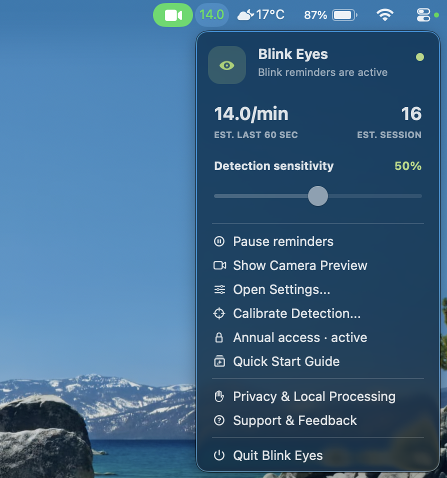
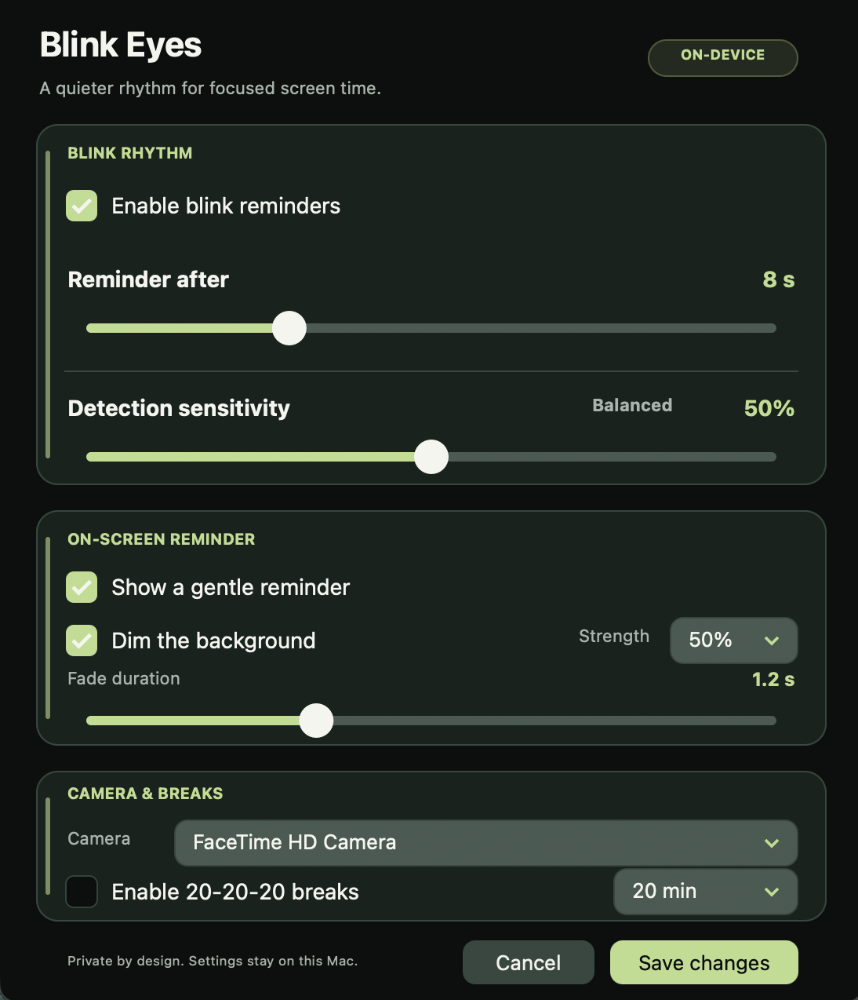
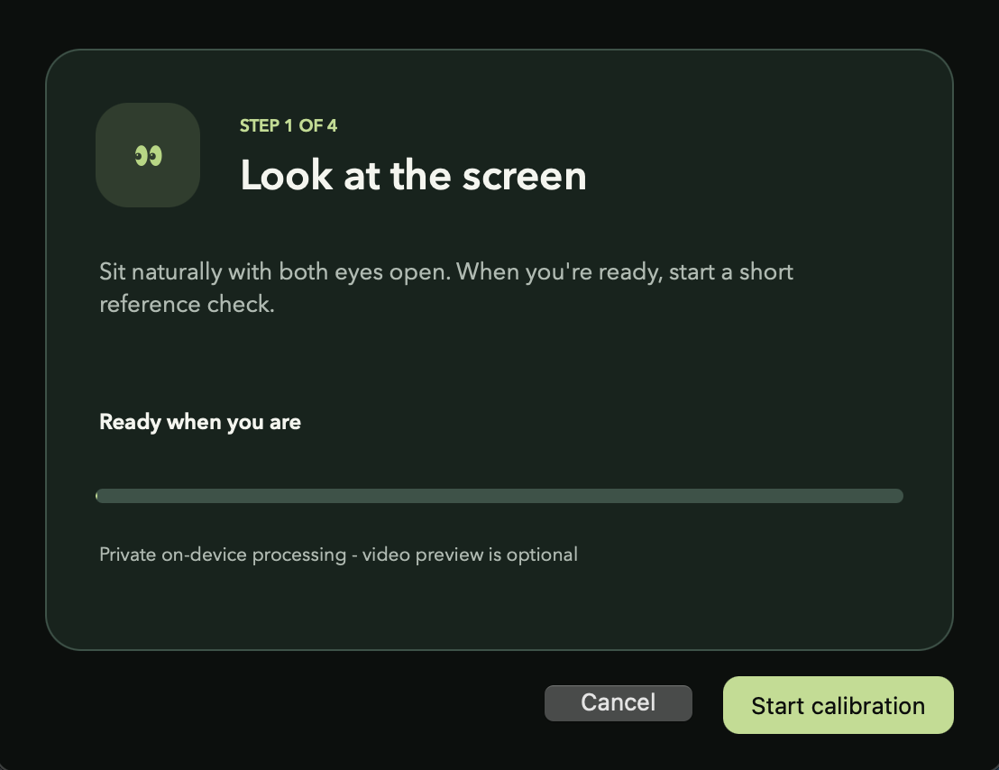

Your recent rhythm, at a glance.
Using your Mac’s camera locally, BlinkTide analyses blinks from the last 60 seconds. It is a live session signal, not a health measurement or a record of your day.
BlinkTide: Eyes in Rhythm
Choose local camera detection to estimate your recent blink rhythm, or use a camera-free timer. At each timer interval, the menu-bar eye blinks green and BlinkTide plays a short, gentle chime.

A calmer screen rhythm
Using your Mac’s camera locally, BlinkTide analyses blinks from the last 60 seconds. It is a live session signal, not a health measurement or a record of your day.
Choose a timer interval and keep the camera off. When time is up, the menu-bar eye blinks green and a short, pleasant chime plays once.
Enable a separate cue to look away from the screen. Choose an interval that suits your routine; it is off until you turn it on.
Press Control–Option–Command–B to start or pause webcam detection. The optional local Preview remains available to check lighting, glasses and head position.
Settings & privacy
Set BlinkTide up around the way you work, then keep the controls close at hand from the menu bar.
The optional live Preview and guided calibration help you check camera detection. Press Control–Option–Command–B anytime to start or pause it. Calibration values and estimates stay in memory for the current session.
Setup help

Take a short guided check to help BlinkTide understand your eyes in the current session. Everything stays local and disappears when you quit.
Camera access is used only for Camera detection. Timer mode keeps the camera off. Camera images are never recorded or uploaded.
Lifetime access
Try BlinkTide for seven days and see how it fits into your real work routine before you decide.
Try every feature free for 7 days, then pay €8.99 once to keep BlinkTide for life. No subscription and no automatic renewal. Purchase and restoration are handled by Apple.
Requires a Mac with Apple silicon · macOS 14 or later · No ads · No tracking · No app account · No cloud sync
BlinkTide is a productivity reminder, not intended for medical use. Blink estimates are not health measurements.